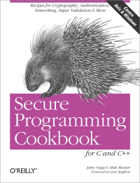
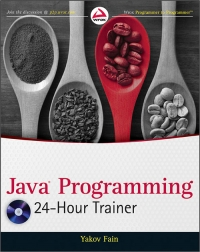
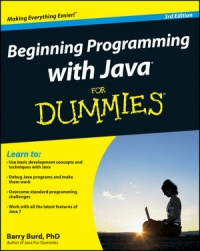
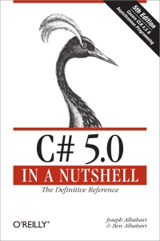
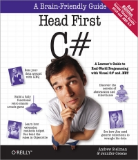
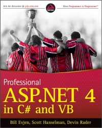

-
Head First C
David Griffiths, Dawn GriffithsEver wished you could learn C from a book? Head First C provides a complete learning experience for C and structured imperative programming. With a unique method that goes beyond syntax and how-to manuals, this guide not only teaches you the language, it helps you understand how to be a great programmer. You'll learn key areas such as language basics, pointers and pointer arithmetic, and dynamic memory management. Advanced topics include multi-threading and network programming - topics typically covered on a college-level course.

-
- 
Secure Programming Cookbook for C and C++
John Viega, Matt MessierPassword sniffing, spoofing, buffer overflows, and denial of service: these are only a few of the attacks on today's computer systems and networks. At the root of this epidemic is poorly written, poorly tested, and insecure code that puts everyone at risk. Clearly, today's developers need help figuring out how to write code that attackers won't be able to exploit. But writing such code is surprisingly difficult.
-
- 
Java Programming 24-Hour Trainer
Yakov FainAs one of the most popular languages for building web applications, Java is often the first language that programmers learn to use. This self-paced book-and-video combination is an ideal introduction to the world of programming with Java. With it and the Java Development Kit, you can compile your first program. Assuming little or no programming experience, the easy-to-follow lessons are reinforced by step-by-step instructions.
-
- 
Beginning Programming with Java For Dummies, 3rd Edition
Barry BurdJava is a popular language for beginning programmers, and earlier editions of this fun and friendly guide have helped thousands get started. Now fully revised to cover recent updates for Java 7.0, Beginning Programming with Java For Dummies, 3rd Edition is certain to put more first-time programmers and Java beginners on the road to Java mastery.
-
- 
C# 5.0 in a Nutshell, 5th Edition
Joseph Albahari, Ben AlbahariWhen you have a question about C# 5.0 or the .NET CLR, this bestselling guide has precisely the answers you need. Uniquely organized around concepts and use cases, this updated fifth edition features a reorganized section on concurrency, threading, and parallel programming - including in-depth coverage of C# 5.0's new asynchronous functions.
-
- 
Head First C#, 2nd Edition
Andrew Stellman, Jennifer GreeneYou want to learn C# programming, but you're not sure you want to suffer through another tedious technical book. You're in luck: Head First C# introduces this language in a fun, visual way. You'll quickly learn everything from creating your first program to learning sophisticated coding skills with C# 4.0, Visual Studio 2010 and .NET 4, while avoiding common errors that frustrate many student.
-
- 
Professional ASP.NET 4 in C#
Nicholas C. ZakasASP.NET is about making you as productive as possible when building fast and secure web applications. Each release of ASP.NET gets better and removes a lot of the tedious code that you previously needed to put in place, making common ASP.NET tasks easier. With this book, an unparalleled team of authors walks you through the full breadth of ASP.NET and the new and exciting capabilities of ASP.NET 4. The authors also show you how to maximize the abundance of features that ASP.NET offers to make your development process smoother and more efficient...